Chapter 4 Ideal Point MRP
This chapter introduces ideal point MRP, an alternative to standard MRP that can be used when a survey contains at least two related questions that reflect the same attitude or ability. We will present how this method can be used for obtaining sub-national estimates of the latent attitude and also for improving estimates with respect to the individual questions.
4.1 Introduction and Literature
4.1.1 The ABC of IRT
Being developed in educational research, ideal point models (also called Item Response Theory models) assume that each participant \(j\) has a latent ability \(\alpha_j\). In the context of a math exam, this ability parameter reflects how good a certain student is at math. Of course, \(\alpha_j\) is said to be latent because we do not observe it directly, but only through the student’s answers to \(k\) math-related questions. The ideal point model maps the unobserved ability \(\alpha_j\) to the probability that subject \(j\) answers correctly question \(k\):
\[ P(y = 1) = logit^{-1}(\alpha_j - \beta_k) \] The probability of correctly answering question \(k\) does not only depend on the student ability\(\alpha_j\), but also on the question difficulty \(\beta_k\). Let’s imagine one student with \(\alpha_1 = 2\) that answers two questions with difficulties \(\beta_1 = 0\) and \(\beta_2 = 3\). If the case of her answering the first question, we have that there is a \(logit^{-1}(2 - 0) = 88\%\) probability of answering it correctly. In the case of the second question, she has a lower probability of getting it right, in this case \(logit^{-1}(2 - 3) = 27\%\). This is because the second question is much more difficult than the first. If we know take a second student with a lower ability \(\alpha_2 = -1.5\), his probabilities of getting these questions correctly are \(logit^{-1}(-1.5 - 0) = 18\%\) and \(logit^{-1}(-1.5 - 3) = 1\%\).
In some situations not every individuals encounters every question. In this case, the ideal point model can be written as \(P(y_i = 1) = logit^{-1}(\alpha_{j[i]} - \beta_{k[i]})\). In this case, the index \(i\) corresponds to the question \(k[i]\) responded by the student \(j[i]\). Although we will conserve this notation, the data we will use during this case all individuals have responded to all of the questions considered.
The above model, which is usually referred as Rasch model or one-parameter model, assumes each question is equally relevant (or discriminatory) to measure the latent ability \(\alpha_j\). Although in educational testing it is desirable to construct questions that are able to discriminate between a student with a low ability and another one with high ability, in practice not all items achieve this to the same extent. This is exactly what the discrimination parameter \(\gamma_k\) reflects. Thus, this extended version that is often called two-parameter ideal point model becomes:
\[ P(y_i = 1) = \gamma_{k[i]} (logit^{-1}(\alpha_{j[i]} - \beta_{k[i]})) \]
Let’s consider two questions with equal difficulty \(\beta_1 = 0\) and \(\beta_2 = 0\), but with different discrimination \(\gamma_1 = 0.1\) and \(\gamma_2 = 2.5\). The high-ability student described previously has a \(logit^{-1}(0.1 \times (2 - 0) = 55\%\) probability of responding correctly to the first question, while the low-ability participant has a \(logit^{-1}(0.1 \times (-1.5 - 0) = 46\%\) chance. These probabilities are close because this question has a low discrimination parameter, and is therefore not particularly good at distinguishing between high-ability and low-ability individuals. Conversely, the second question has a high discrimination parameter, and therefore the probabilities for these two students are \(logit^{-1}(1.7 \times (2 - 0) = 97\%\) and \(logit^{-1}(1.7 \times (-1.5 - 0) = 7\%\), respectively.
It is sometimes useful to think about the ideal point model as a function that transforms a latent ability \(\alpha_j\) into the probably of answering correctly a certain question. This mapping depends on the characteristics of the question, which in the case of the two-parameter ideal point model are the difficulty \(\beta_k\) and the discrimination \(\gamma_k\). We can visualize how different values for \(\beta_k\) and \(\gamma_k\) influence this transformation.
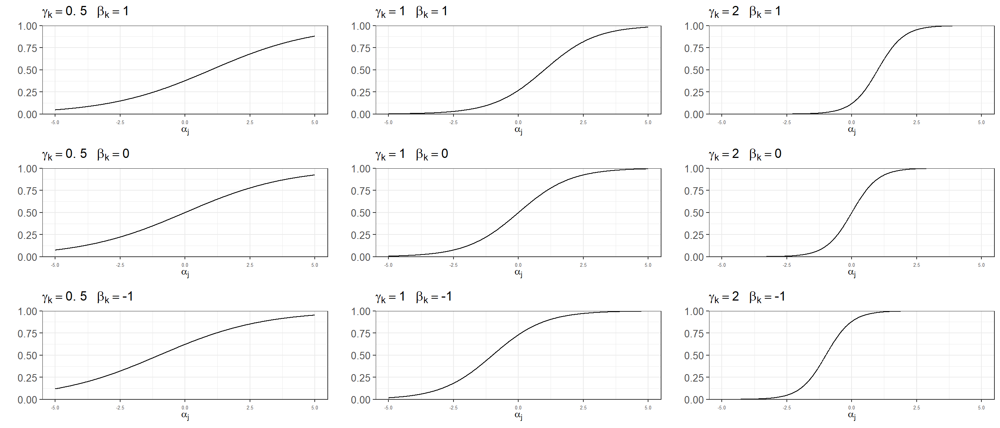
4.1.1.1 Multilevel structure and identification
The parameters used in the ideal point model are often assumed to follow a multilevel structure that assigns normal distributions to the abilities, difficulties, and discriminations:
\[ \begin{align} \alpha_j &\sim \text{normal}(\mu_{\alpha}, \sigma_{\sigma}) \text{ for } j = 1, ..., J \\ \beta_k &\sim \text{normal}(\mu_{\beta}, \sigma_{\beta}) \text{ for } k = 1, ..., K \\ \gamma_k &\sim \text{normal}(\mu_{\gamma}, \sigma_{\gamma}) \text{ for } k = 1, ..., K \\ \end{align} \]
However, the two-parameter ideal point model is not identified. In particular, it suffers from three problems (see Bafumi et al. (2005) for a more detailed discussion on identification problems and solutions):
- Additive aliasing: Adding a constant to \(\alpha_j\) and \(\beta_k\) will not change its predictions.
- Multiplicative aliasing: Similarly, multiplying \(\gamma_k\) by a constant and dividing \((\alpha_j - beta_j)\) by the same constant will keep the predictions unchanged.
- Reflection invariance: Lastly, multiplying the ability, difficulty, and discrimination parameter by -1 will also result in identical predictions.
The first two issues can be resolved by creating standardized parameters \(\alpha_j^{\rm adj} = \frac{\alpha_j - \bar{\alpha}}{s_{\alpha}}\), \(\beta_k^{\rm adj} = \frac{\beta_k - \bar{\alpha}}{s_{\alpha}}\), and \(\gamma_k^{\rm adj} = \gamma_k s_{\alpha}\). The new ability, difficulty, and discrimination parameters are well defined and preserve the likelihood as \(P(y_i = 1) = logit^{-1}(\gamma_{k[i]}(\alpha_{j[i]} - \beta_{k[i]})) = logit^{-1}(\gamma_{k[i]}^{\rm adj}(\alpha_{j[i]}^{\rm adj} - \beta_{k[i]}^{\rm adj}))\). Reflection invariance can be avoided by restricting \(\gamma_k \gt 0\) (and consequently \(\mu_{\gamma} \gt 0\) and also \(\gamma_k^{adj} \gt 0\)), which in turn requires precoding the questions so they are in the same direction (i.e. indicating conservative positions).
4.1.1.2 Including predictors for \(\alpha_j\)
The mode we have described assumes that the abilities \(\alpha_j\) follow a normal distribution centered at the population average ability \(\mu_{\alpha}\) with a standard deviation \(\sigma_{\sigma}\). We can extend this by adding ability-level predictors, resulting in \(\alpha_j \sim \text{normal}(\mu_{\alpha} + X \beta)\) where \(\mu_{\alpha}\) now represents the regression intercept.
4.1.2 Ideal point models and estimating public opinion
Until now we have used the example of a math test. However, beyond educational settings an ideal point model can be used to reflect other situations in which a latent characteristic determines a dichotomous response. In the Political Science literature, these models have been famously used to reflect the ideological position of legislators based on their roll call voting records (Clinton, Jackman, and Rivers (2004)). Similarly, we can use the survey respondents support for different statements as reflecting a latent attitude based on a series of survey questions. There have been two main bodies of work that have combined ideal-point models and MRP.
Tausanovitch and Warshaw (2013) follow a two-step process to estimate policy preferences across states and cities in the US. First, they fit a unidimensional ideal point model such as the one described by Clinton, Jackman, and Rivers (2004) based on dichotomous responses from the CCES and the ACS, obtaining estimates of the liberalness-conservativeness for 270,000 Americans. Instead of using dissaggregation, the second step involves using an MRP approach that instead of considering the response to any individual question as the outcome they predict this estimated ideal point for each participant. In a later work, Tausanovitch and Warshaw (2014) correlate the city-level policy preference estimates obtained using this method with the policies enacted at the municipal level, finding a clear correspondence.
In a related line of work, Caughey and Warshaw (2015) use a conceptually different approach in order to estimate latent abilities over time. First, they model survey responses not at the individual level, but rather at the level of subpopulation groups defined by demographic and geographic characteristics. This has the advantage of using highly sparse data without requiring ‘linking’ questions that bridge across all the surveys. Second, they extend the model to borrow information across time, which allows to create time-specific estimates of average group opinion. They use this dynamic group-level IRT framework to estimate policy liberalism at the U.S. state level in each year between 1972 and 2012 (for other applications, see Bergquist and Warshaw (2019) and Bergquist and Warshaw (2019)).
4.2 A Two-Parameter IRT Model with Latent Multilevel Regression
In the previous two chapters we have only considered one of the questions in the CCES. However, this survey includes six support/oppose statements about abortion:
- CC18_321a: Always allow a woman to obtain an abortion as a matter of choice.
- CC18_321b: Permit abortion ONLY in case of rape, incest or when the woman’s life is in danger.
- CC18_321c: Ban abortions after the 20th week of pregnancy.
- CC18_321d: Allow employers to decline coverage of abortions in insurance plans.
- CC18_321e: Prohibit the expenditure of funds authorized or appropriated by federal law for any abortion.
- CC18_321f: Make abortions illegal in all circumstances.
We can use a two-parameter logistic item response model with a latent (multilevel) regression to model \(k\) questions based on \(j\) respondents:
\[ \begin{equation*} P(y_i = 1) = logit^{-1}(\gamma_{k[i]}^{adj}(\alpha_{j[i]}^{adj} - \beta_{k[i]}^{adj})) \end{equation*} \] where:
\[ \begin{align*} \alpha_j &\sim {\rm normal}(\mu^{\alpha} + A_{\rm s[j]}^{\rm state} + A_{\rm a[j]}^{\rm age} + A_{\rm r[j]}^{\rm ethnicity} + A_{\rm e[j]}^{\rm education} + B^{\rm male} \cdot {\rm Male}_{\rm j}, \sigma^{\alpha}) {\rm \ for} \ j = 1,...,J \\ \beta_k &\sim {\rm normal}(\mu^{\beta}, \sigma^{\beta}) {\rm \ for} \ k = 1,...,K \\ \gamma_k &\sim {\rm normal_{+}}(\mu^{\gamma}, \sigma^{\gamma}) {\rm \ for} \ k = 1,...,K \end{align*} \] and:
\[ \begin{align*} A_{\rm s}^{\rm state} &\sim {\rm normal}(A^{\rm region}_{n[s]} + B^{\rm repvote} \cdot {\rm RepVote}_{\rm s}, \sigma^{\rm state}) \textrm{ for s = 1,...,50}\\ A_{\rm a}^{\rm age} & \sim {\rm normal}(0,\sigma^{\rm age}) \textrm{ for a = 1,...,6}\\ A_{\rm r}^{\rm ethnicity} & \sim {\rm normal}(0,\sigma^{\rm ethnicity}) \textrm{ for r = 1,...,4}\\ A_{\rm e}^{\rm education} & \sim {\rm normal}(0,\sigma^{\rm education}) \textrm{ for e = 1,...,5}\\ A_{\rm n}^{\rm region} & \sim {\rm normal}(0,\sigma^{\rm region}) \textrm{ for a = 1,...,4}\\ \end{align*} \]
Note that our model is fundamentally different from the two-step approach used by Tausanovitch and Warshaw (2013). By first estimating the ideal point of each individual and then using MRP, their method is not propagating the uncertainty about the estimated ideal points into the final national or subnational estimates. Considering one of the essential advantages of Bayesian inference is to properly quantify uncertainty, we include the multilevel stage of the MRP within the ideal point model model. Thus, in our model the multilevel regression serves as a prior for \(\alpha_j\). In this example we have included the same predictors introduced in first chapter, excluding the interaction terms for simplicity.
As we already introduced in the previous section, identification can be achieved by transforming the ability, difficulty, and discrimination parameters by \(\alpha_j^{\rm adj} = \frac{\alpha_j - \bar{\alpha}}{s_{\alpha}}\), \(\beta_k^{\rm adj} = \frac{\beta_k - \bar{\alpha}}{s_{\alpha}}\), \(\gamma_k^{\rm adj} = \gamma_k s_{\alpha}\). We also restricted \(\gamma_k > 0\), which in turn requires precoding all the questions. The first question was reversed in order for all the outcomes to reflect a supporting perspective on restricting abortion rights. Therefore, a high ability \(\alpha_j^{\rm adj}\) will represent a strong opposition to abortion.
4.2.1 Bayesian estimation
In this initial experiment we analyzed the six abortion responses for a random sample of 5,000 CCES participants. The Stan code we used is shown below, and was fitted using 5 chains with 2,000 iterations (500 warmup).
# We skip reading the data, as the process is exactly the same as in chapter 1 except for reading six questions
# in the CCES instead of only one. See Github repo for the entire code.
# Melt df for Stan
df_melted <- df %>% select(starts_with("abortion"), state, ethnicity, age, educ, male, region, subject) %>%
melt(id.vars = c("state", "age", "ethnicity", "educ", "male", "region", "subject"))
# Prepare data for Stan
data <- list(J = length(unique(df_melted$subject)),
K = length(unique(df_melted$variable)),
N = nrow(df_melted),
S = nrow(statelevel_predictors),
P = nrow(postrat_df),
participant = as.numeric(df_melted$subject),
question = as.numeric(df_melted$variable),
state = as.numeric(df_melted$state),
age = as.numeric(df_melted$age),
ethnicity = as.numeric(df_melted$ethnicity),
educ = as.numeric(df_melted$educ),
male = as.numeric(df_melted$male),
region = as.numeric(statelevel_predictors$region),
repvote = statelevel_predictors$repvote,
postrat_state = as.numeric(postrat_df$state),
postrat_age = as.numeric(postrat_df$age),
postrat_ethnicity = as.numeric(postrat_df$ethnicity),
postrat_educ = as.numeric(postrat_df$educ),
postrat_male = postrat_df$male,
y = df_melted$value)
# Only train if train = TRUE; if not, load from fit_idealpoint.rds
train = FALSE
if(train){
fit_id <- stan_model("idealpoint.stan")
fit <- sampling(fit_id, data = data, iter = 2000, warmup = 1000, chains = 5,
control = list(adapt_delta = 0.99, max_treedepth = 12),
refresh = 25)
saveRDS(fit, file = "fit_idealpoint.rds")
} else {
fit <- readRDS("fit_idealpoint.rds")
}
# Extract draws as dataframe
df_fit <- rstan::extract(fit)4.2.2 Initial Results
We can visualize the posterior distribution for the estimated \(\alpha_j^{adj}\) of the first five participants:
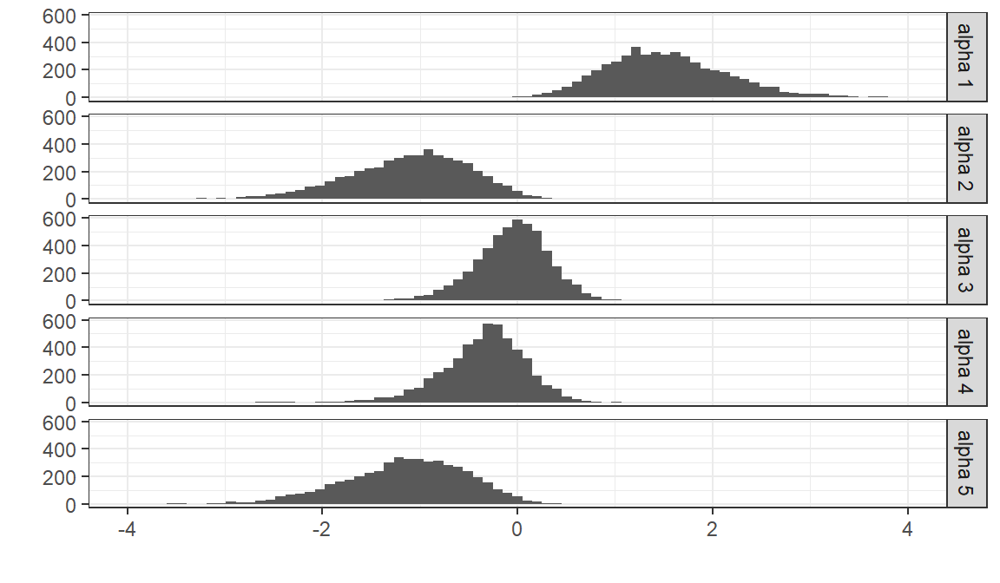
Conversely, we can visualize the distribution of \(\alpha_j^{adj}\) for a random subset of the posterior draws:
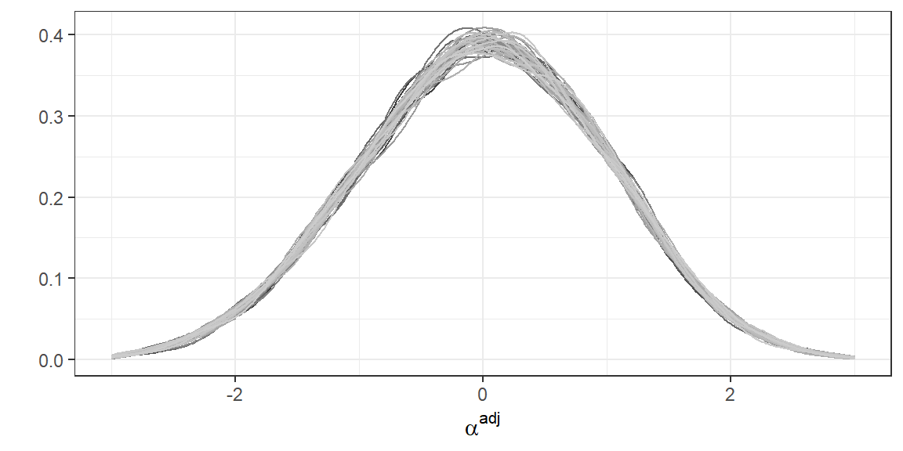
As a first check that the ideal points \(\alpha_j^{adj}\) estimated by the model are capturing a meaningful latent variable, we correlate them with the reported ideology in the CCES by each participant \(j\). This results in a correlation of 0.53.
We can plot the distribution for a one single draw of \(\alpha_j^{adj}\), but selecting only CCES respondents from California and Tennessee, which provides an approximation of the between-state and within-state variations. Not surprisingly, individuals from Tennessee tend to have higher ideal points.
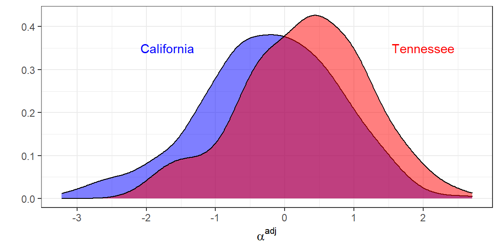
Lastly, we can also visualize the probability of supporting each statement for the potential values of \(\alpha_j^{adj}\).
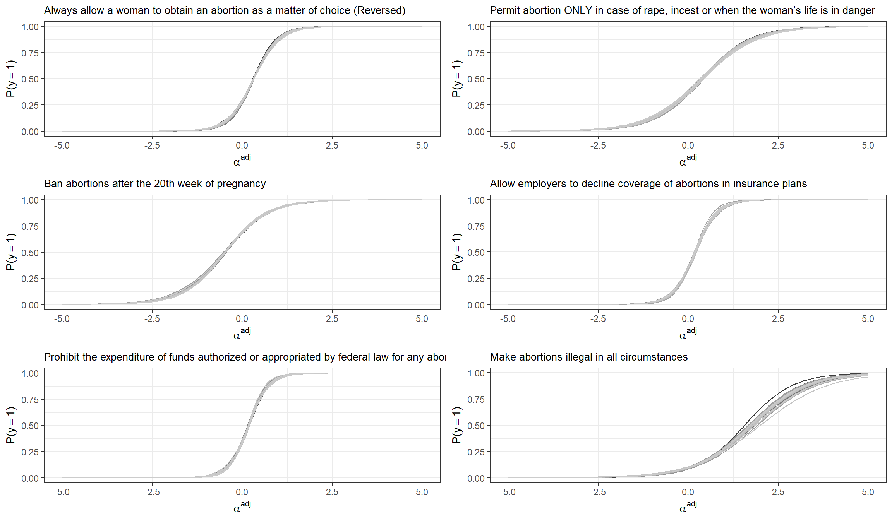
4.3 The Abortion Opposition Index for US States
Assuming our poststratification table has \(T\) cells that reflect different geographic-demographic combinations, the ideal point model allows to estimate the expected ability \(\mu_{\alpha_t}\) for each of these combinations. Before poststratification, we need to transform this \(\mu_{\alpha_t}\) into \(\mu_{\alpha^{adj}_t}\) by considering that \(\mu_{\alpha^{adj}_t} = \frac{\mu_{\alpha_t} - \bar{\alpha}}{s_{\alpha}}\). In order to do this we:
- Draw with replacement \(L\) individuals from the poststratification table (weighting by \(N\), the number of people in each cell).
- Calculate \(\mu_{\alpha_l}\) for each subject \(l\), and then add some random noise centered at zero and with standard deviation \(\sigma_\alpha\) (which was estimated in the model). This simulates the \(\alpha_l\) for a random sample of \(L\) subjects that come from the population defined by the poststratification table.
- Given \(\alpha_l\), calculate \(\bar{\alpha}_l\) and \(s_{\alpha_l}\). These values correspond to the estimated average and standard deviation for the abilities in the population defined by the poststratification table.
- Calculate \(\mu_{\alpha^{adj}_t} = \frac{\mu_{\alpha_t} - \bar{\alpha}_l}{s_{\alpha_l}}\)
This process is repeated for each draw of the posterior distribution. If we have \(D\) draws and \(T\) poststratification cells, \(\mu_{\alpha^{adj}_t}\) will be a \(D \times T\) matrix.
# Calculating mu_alpha_adj
ndraws <- nrow(df_fit$alpha_pred_raw)
L <- 10000
mu_alpha_adj <- matrix(NA, nrow = ndraws, ncol = 12000)
for(d in 1:ndraws){
mu_alpha <- df_fit$mu_alpha[d] + df_fit$alpha_pred_raw[d,]
sample_alphas_pop <- sample(mu_alpha, size = L, prob = postrat_df$n/sum(postrat_df$n), replace = TRUE)
sample_alphas_pop <- sample_alphas_pop + rnorm(L, 0, df_fit$sigma_alpha[d])
mean_alpha <- mean(sample_alphas_pop)
sd_alpha <- sd(sample_alphas_pop)
mu_alpha_adj[d,] <- (mu_alpha - mean_alpha) / sd_alpha
}\(\mu_{\alpha^{adj}_t}\) can be poststratified as usual in order to obtain state-level ideal points that reflect what we may refer as the ‘Abortion Opposition Index’. It is important to clarify that these final sub-national estimates are relative to the national level (which is, as defined in the model, equal to zero).
### Poststratification
national_level <- mu_alpha_adj %*% postrat_df$n / sum(postrat_df$n)
df_state_idealpoint <- data.frame(state = rep(NA, length(levels(df$state))),
idealpoint_mean = NA,
idealpoint_sd = NA)
i = 1
for(s in levels(df$state)){
state_estimates <- (mu_alpha_adj[, which(postrat_df$state==s)] %*% postrat_df$n[which(postrat_df$state==s)]/
sum(postrat_df$n[which(postrat_df$state==s)]) )
df_state_idealpoint$state[i] <- s
df_state_idealpoint$idealpoint_mean[i] <- mean(state_estimates)
df_state_idealpoint$idealpoint_sd[i] <- sd(state_estimates)
i = i + 1
}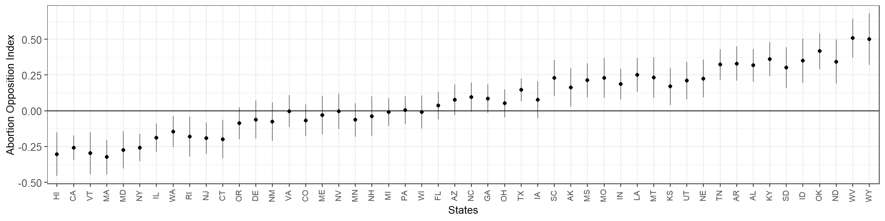
The correlation between these state-level estimates and Republican voteshare in the 2016 election is 0.99.
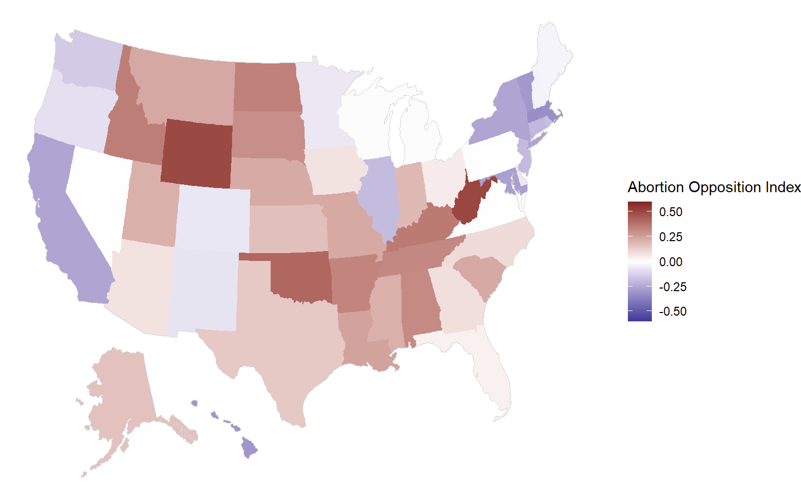
4.3.1 Comparison with simple sum
A simpler approach for obtaining estimates about the latent abortion opposition is to consider the sum of the six questions for each respondent as the outcome, fitting a multilevel linear regression and poststratifying as usual.
df$abortion_score <- rowSums(select(df, abortion1, abortion2, abortion3, abortion4, abortion5, abortion6))
train = FALSE
if(train){
fit_sum <- stan_glmer(abortion_score ~ (1 | state) + (1 | ethnicity) + (1 | age) + (1 | educ) + male + repvote + (1 | region),
data = df,
prior = normal(0, 1, autoscale = TRUE),
prior_covariance = decov(scale = 0.50),
adapt_delta = 0.99,
seed = 1010)
saveRDS(fit_sum, file = "fit_sum.rds")
} else {
fit_sum <- readRDS(file = "fit_sum.rds")
}
P <- posterior_epred(fit_sum, newdata = left_join(postrat_df, statelevel_predictors))
df_state_sum <- data.frame(state = levels(postrat_df$state),
sum_mean = NA,
sum_sd = NA,
sum_mean_relative = NA)
national_level <- P %*% postrat_df$n / sum(postrat_df$n)
for(i in 1:length(levels(postrat_df$state))) {
filtering_condition <- which(postrat_df$state == as.character(df_state_sum$state[i]))
P_filtered <- P[ ,filtering_condition]
k_filtered <- postrat_df[filtering_condition, ]$n
poststrat_prob_state <- P_filtered %*% k_filtered / sum(k_filtered)
df_state_sum$sum_mean[i] <- mean(poststrat_prob_state)
df_state_sum$sum_sd[i] <- sd(poststrat_prob_state)
}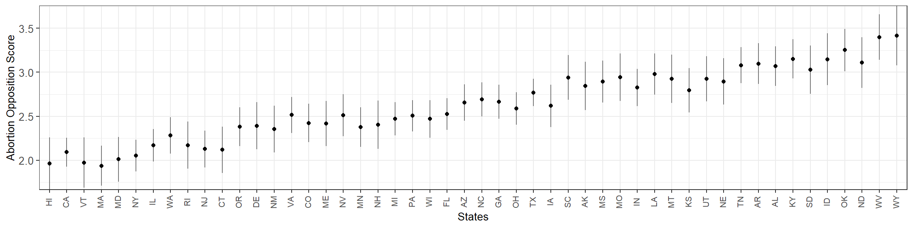
These results are very similar to what we obtained with the ideal-point model. In fact, the state-level point estimates produced by the two methods have a correlation of 0.9985. Still, the ideal point model results in more precise results, with an average absolute \(t\) of 3.06 that is higher than the 1.58 produced by naive sum of question outcomes.
4.3.2 Fake-data simulation
We expect the ideal point model to be similar to the naive sum approach when all the questions are equally relevant to the latent variable. Conversely, when some of the questions are more relevant than others we expect the ideal point model will perform better both in terms of reduced error and tighter standard error. To demostrate this we use fake data simulation. We draw 2,500 individuals according to the weights provided by the poststratification table, calculate their true ideal point based on pre-specified values for the multilevel predictors, and then define six questions. In one case we will use six questions which are approximately equally relevant (\(\mu^{\gamma} = 2\), \(\sigma^{\gamma} = 0.2\)), while in the other we will use six questions with very different discrimination parameters (\(\mu^{\gamma} = 2\), \(\sigma^{\gamma} = 0.8\)).
4.3.2.1 Questions with similar discrimination parameters
When we consider six questions with little variation across their discrimination parameters, the results for the ideal point MRP and the sum MRP are very similar both in terms of MAE and mean SE. The ideal point MRP estimates and the true values are in the same scale, but the naive sum MRP are not. In order to compare them we standarize the subnational estimates that result from the three methods.
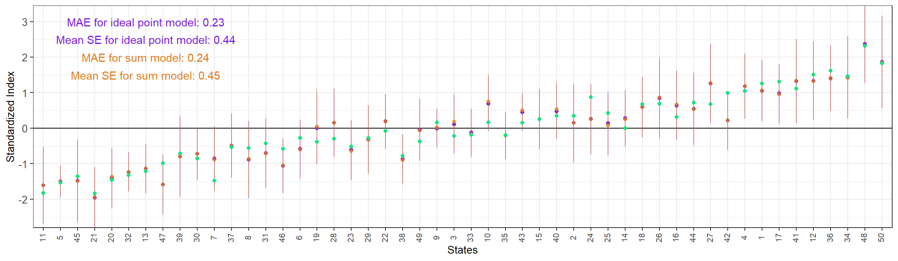
4.3.2.2 Questions with different discrimination values
When the questions have very different \(\gamma_k\), the advantage of ideal point MRP is more remarkable, both in terms of lower mean SE and smaller Mean Absolute Error.
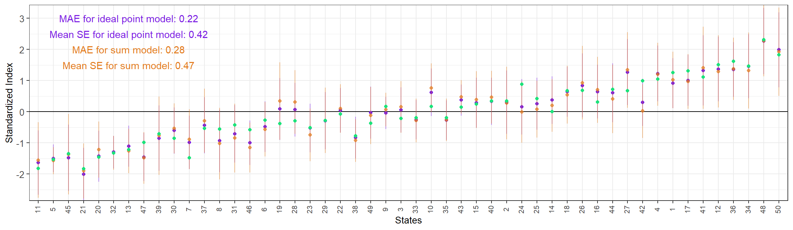
Lastly, we see that the ideal point MRP has been able to recover the true \(\gamma_k\) and \(\beta_k\) for each question.
| true_gamma | estimated_gamma | true_beta | estimated_beta |
|---|---|---|---|
| 2.3 | 2.41 | 0.0 | 0.02 |
| 3.0 | 2.89 | 1.0 | 0.98 |
| 1.3 | 1.33 | -1.0 | -0.89 |
| 0.3 | 0.26 | 0.5 | 0.33 |
| 2.8 | 2.74 | -0.5 | -0.46 |
| 1.7 | 1.60 | 0.0 | -0.01 |
4.4 Estimating Support for Individual Questions
Based on the estimated \(\mu^{\alpha}\), \(A_{\rm s[j]}^{\rm state}\), \(A_{\rm a[j]}^{\rm age}\), \(A_{\rm r[j]}^{\rm ethnicity}\), \(A_{\rm e[j]}^{\rm education}\), and \(B^{\rm male}\) we can estimate \(\mu_{\alpha_j}\), the average ability for each cell \(j\) in the poststratification table. This was the quantity that previously we standardized into \(\mu_{\alpha^{adj}_j}\) and used in the poststratification step, obtaining state-level estimates for the ideal points. These average ability estimates can instead be transformed with \(logit^{-1}(\gamma_{k}^{adj}(\mu_{\alpha_j}^{adj} - \beta_{k}^{adj}))\). The result is an estimate of the probability of supporting question \(k\) for the average ability corresponding to each poststratification cell.
4.4.1 Mind the (Jensen’s) gap
\(\mu_{\alpha^{adj}_j}\) reflects the (standardized) average ideal point position for each poststratification cell, which can be transformed into the probability of the average person in this cell \(j\) supporting a given statement \(k\). However, this quantity is not particularly interesting for us. What we really need to estimate is the average probability that the individuals in cell \(j\) support statement \(k\). In a simplified example, what we have estimated is the probability that the average Texan supports a given statement. However, our goal is to obtain the average support of that statement for the people in Texas. For this, we need to consider that, for each poststratification cell \(j\), \(\alpha_j \sim N(\mu_{\alpha_j} \sigma_\alpha)\).
Naively using \(\mu_{\alpha_j}\) or its standardized version, as we have done in the previous subsection, results in estimates that are too extreme. As a result of Jensen’s inequality and the properties of the logistic function, if we use a nonlinear transformation \(f(x) = logit^{-1}(g(x - b))\) (where \(g>0\)) on a random variable \(X\) we will obtain that \(f(E[X]) \leq E[f(X)]\) when \(f(x)\) is convex (i.e. when \(X - b < 0\)) and \(f(E[x]) \geq E[f(x)]\) when it is concave (i.e. when \(X - b > 0\)). We can show this by simulating multiple draws from \(X \sim N(0, \sigma)\) and transforming them with \(f(x) = logit^{-1}(x)\) (i.e. in our example, \(b = 0\) and \(g = 1\)):
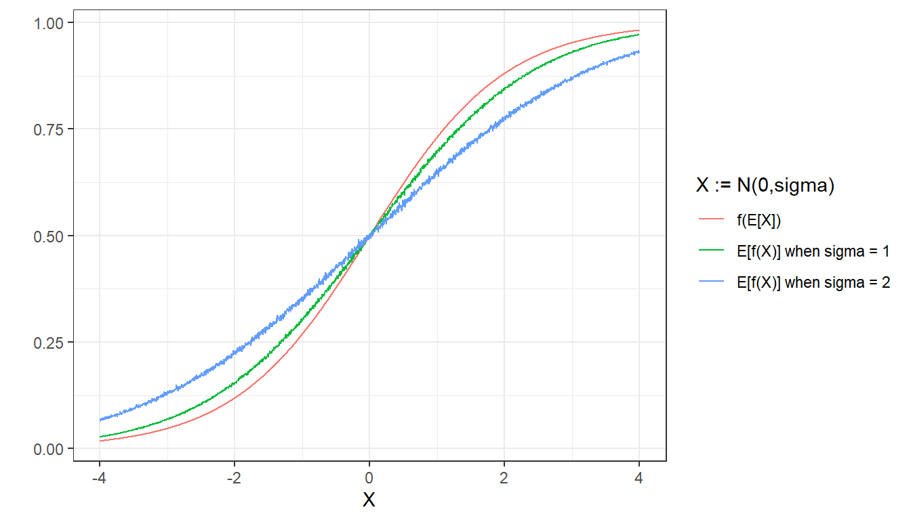
In essence, using \(\mu_{\alpha_j}\) or its standardized version will result in more extreme estimates due to the nonlinearity in the transformation. However, obtaining reliable estimates of the probability of support of question \(k\) for each poststratification cell \(j\) is still possible:
- Draw with replacement \(L\) individuals from the poststratification table (weighting by \(N\), the number of people in each cell).
- Calculate \(\mu_{\alpha_l}\) for each subject \(l\), and then add some random noise centered at zero and with standard deviation \(\sigma_\alpha\) (which was estimated in the model). This simulates the \(\alpha_l\) for a random sample of \(L\) subjects that come from the population defined by the poststratification table.
- Given \(\alpha_l\), calculate \(\bar{\alpha}_l\) and \(s_{\alpha_l}\). These values correspond to the estimated average and standard deviation for the abilities in the population defined by the poststratification table.
- For each poststratification cell \(t\):
- Simulate \(s\) draws from the distribution of alphas \(\alpha_s \sim \text{normal}(\mu_{\alpha_t}, \sigma_\alpha)\). These \(s\) draws correspond to individuals with the demographic-geographic factors defined in cell \(t\).
- Standardize \(\alpha_s^{adj} = \frac{\alpha_s - \bar{\alpha}_l}{s_{\alpha_l}}\)
- Considering \(\alpha_s^{adj}\) is a vector with \(s\) elements, obtain \(P(y_{k,t} = 1) = \text{Mean}(logit^{-1}(\gamma_k^{adj}\times(\alpha_s^{adj} - \beta_k^{adj})))\)
\(P(y_{k,t} = 1)\) represents the average support for question \(k\) among individuals in cell \(t\). To propagate the uncertainty about the parameters in the model, these steps must be repeated once for every posterior draw \(d\), obtaining a \(D \times T\) matrix that can be poststratified as usual.
4.4.2 Results from Standard and Ideal Point MRP
We compare the individual-question estimates for the ideal point model and the standard model. As expected, the results from both methods are similar, although there are also some differences.
4.4.2.1 Question 6
Make abortions illegal in all circumstances
The following code implements the algorithm described above that results in the \(D \times T\) matrix \(P(y_{k,t} = 1)\). Instead of considering the \(D\) posterior draws, we only use 25 for computational efficiency. This \(P(y_{k,t} = 1)\) matrix is then poststratified and, ultimately, we obtain the national and state-level estimates.
question_number <- 6
df_fit <- rstan::extract(fit)
ndraws <- 25 # sample of draws to reduce computation time
nsims <- 50
L <- 1000
sample_draws <- sample(nrow(df_fit$alpha_pred_raw), size = ndraws)
question_pred <- matrix(NA, ncol = 12000, nrow = ndraws)
for(d in 1:ndraws){
mu_alpha <- df_fit$mu_alpha[sample_draws[d]] + df_fit$alpha_pred_raw[sample_draws[d],]
sample_alphas_pop <- sample(mu_alpha, size = L, prob = postrat_df$n/sum(postrat_df$n), replace = TRUE)
sample_alphas_pop <- sample_alphas_pop + rnorm(L, 0, df_fit$sigma_alpha[sample_draws[d]])
mean_alpha <- mean(sample_alphas_pop)
sd_alpha <- sd(sample_alphas_pop)
for(t in 1:12000){
alpha_pred <- mu_alpha[t] + rnorm(nsims, 0, df_fit$sigma_alpha[sample_draws[d]])
alpha_pred <- (alpha_pred - mean_alpha)/sd_alpha
question_pred[d,t] <- mean(plogis(df_fit$gamma_adj[sample_draws[d], question_number]*(alpha_pred - df_fit$beta_adj[sample_draws[d], question_number])))
}
}
national_level_idealpoint <- question_pred %*% postrat_df_numeric$n / sum(postrat_df_numeric$n)
df_state_idealpoint <- data.frame(state = 1:max(postrat_df_numeric$state),
idealpoint_mean = NA,
idealpoint_sd = NA)
for(s in 1:max(postrat_df_numeric$state)){
state_estimates <- question_pred[, which(postrat_df_numeric$state==s)] %*% postrat_df$n[which(postrat_df_numeric$state==s)]/
sum(postrat_df_numeric$n[which(postrat_df_numeric$state==s)])
df_state_idealpoint$state[s] <- s
df_state_idealpoint$idealpoint_mean[s] <- mean(state_estimates)
df_state_idealpoint$idealpoint_sd[s] <- sd(state_estimates)
}
df_state_idealpoint$state <- statelevel_predictors$stateThe results are plotted along the full-CCES disaggregated estimates and the estimates obtained with standard MRP.
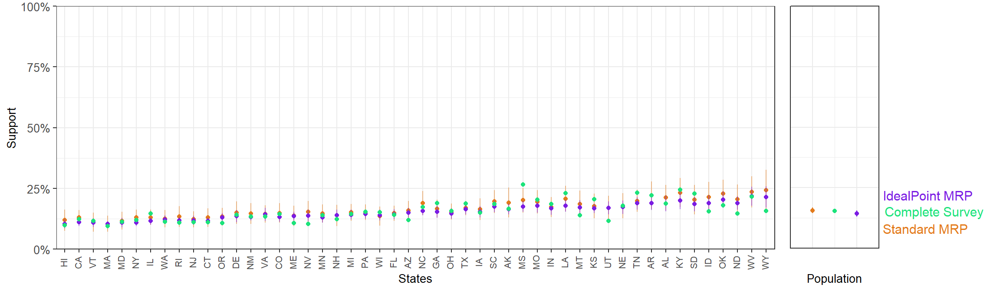
The mean SE for the state-level ideal point MRP estimates is 1.16%, while the standard MRP produces an average SE of 2.24%. Measuring the error of the point estimates is trickier, as there is no clear ground-truth in this case. The closest we can consider are the estimates from the full-sample CCES. If we compare the state-level ideal point MRP estimates to the results from full-sample CCES, we obtain a MAE of 2.09%, while if the comparison is made with the standard MRP we obtain a MAE of 2.17%.
4.4.2.2 Question 5
Prohibit the expenditure of funds authorized or appropriated by federal law for any abortion
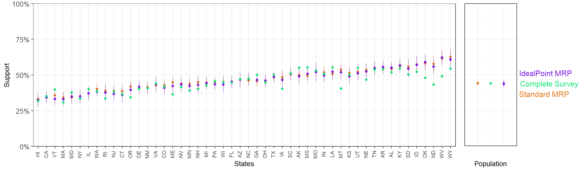
- Ideal point MRP mean SE: 2.44%,
- Standard MRP mean SE: 2.27%.
- Ideal point MRP MAE with respect to results from full-sample CCES:3.26%
- Standard MRP MAE with respect to results from full-sample CCES: 3.68%.
4.4.2.3 Question 4
Allow employers to decline coverage of abortions in insurance plans
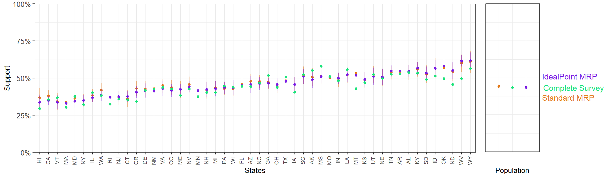
- Ideal point MRP mean SE: 2.28%,
- Standard MRP mean SE: 2.61%.
- Ideal point MRP MAE with respect to results from full-sample CCES:3.19%
- Standard MRP MAE with respect to results from full-sample CCES: 3.13%.
4.4.2.4 Question 3
Ban abortions after the 20th week of pregnancy
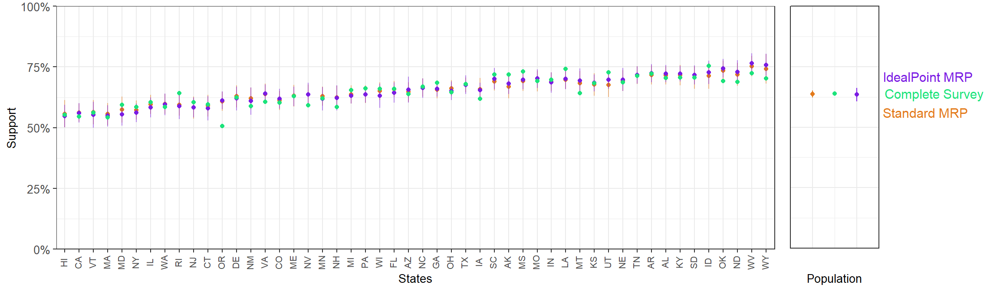
- Ideal point MRP mean SE: 2.11%,
- Standard MRP mean SE: 2.12%.
- Ideal point MRP MAE with respect to results from full-sample CCES:2.37%
- Standard MRP MAE with respect to results from full-sample CCES: 2.14%.
4.4.2.5 Question 2
Permit abortion ONLY in case of rape, incest or when the woman’s life is in danger
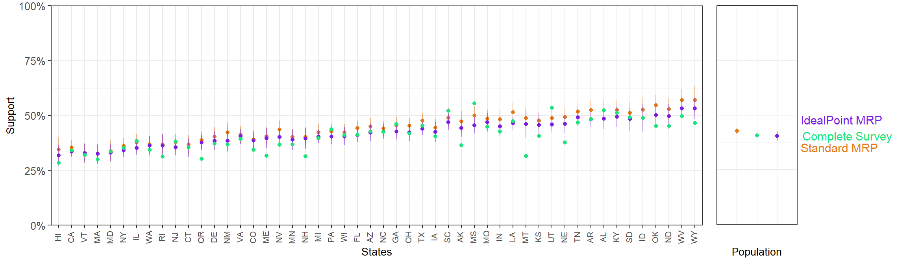
- Ideal point MRP mean SE: 2.07%,
- Standard MRP mean SE: 2.14%.
- Ideal point MRP MAE with respect to results from full-sample CCES:3.28%
- Standard MRP MAE with respect to results from full-sample CCES: 4.41%.
4.4.2.6 Question 1
Always allow a woman to obtain an abortion as a matter of choice (reversed)
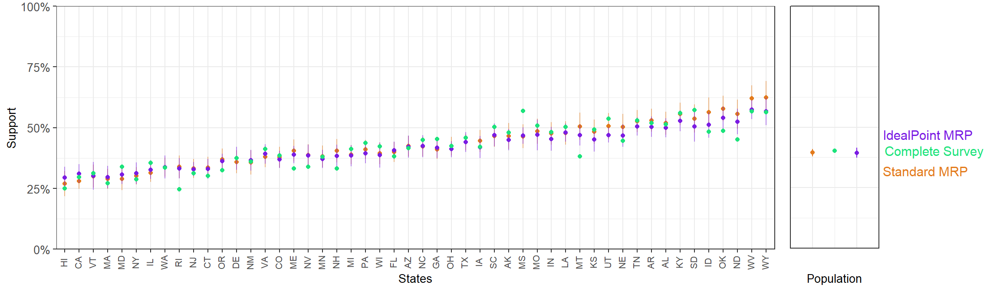
- Ideal point MRP mean SE: 2.17%,
- Standard MRP mean SE: 2.31%.
- Ideal point MRP MAE with respect to results from full-sample CCES:3.15%
- Standard MRP MAE with respect to results from full-sample CCES: 3.43%.
4.4.3 Comparing ideal point and standard MRP using fake-data simulation
Although with some exceptions, the ideal point MRP estimates seem to have lower standard errors and tend to be closer to the full-sample CCES. To compare these two methods in a more controlled setting we use fake data simulation. The DGP assumess each of the 9 questions reflects a (unique) true ideal point with varying difficulty and discrimination. The ideal point is in turn determined by a set of demographic-geographic predictors and some normally-distributed random error. We simulate a population of 10 million individuals based on the weights in the poststratification table, and then obtain a sample of 3,000 participants that is then used for the ideal point MRP and standard MRP state-level estimation for each question. These state-level estimates are evaluated in terms of their average standard error and mean absolute error with respect to the true support in the population.
Below the plot the estimates for three of the simulated questions.
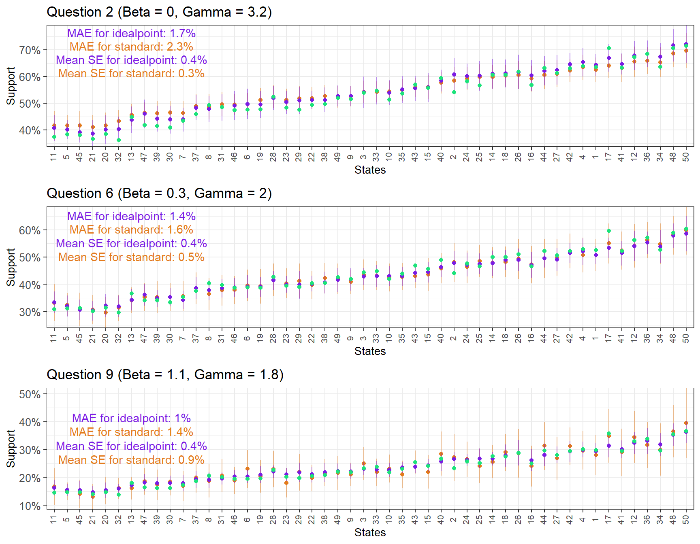
Instead of focusing solely on the results from the 3,000 person sample, we will take samples between \(N = 1000\) and \(N = 5000\) from the simulated population and compare the results of the ideal point MRP and standard MRP on each of the 9 questions.
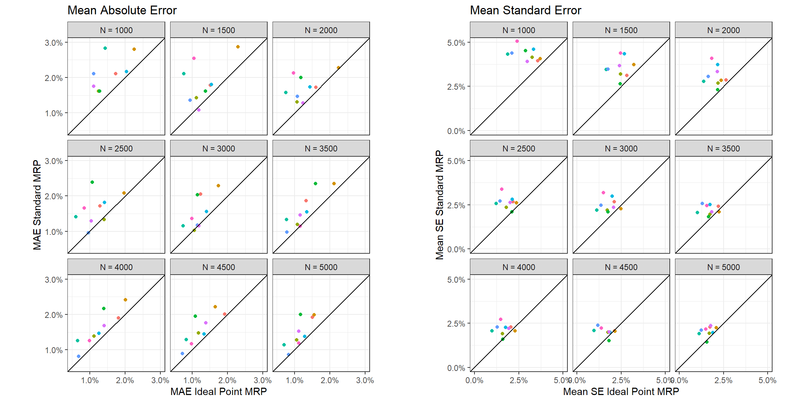
With very few exceptions, the estimates from the ideal point MRP result in a lower MAE and mean SE for all the question and for all the different sample sizes. To further emphasize this point, we plot the average MAE and mean SE across questions as a function of method and sample size.
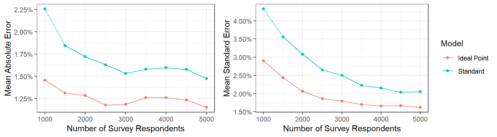
4.4.4 A note of caution
We have shown that the ideal point MRP tends to perform better than standard MRP using both CCES data and fake data. This improvement is due to the model being able to capture useful information from other questions and, thus, provide better estimates for the question of interest. However, ideal point MRP could be detrimental relative to standard MRP if the questions were not relevant with respect to the same latent construct. Our CCES data used six questions that, although obviously slightly different in terms of the position they intend to measure, all were closely related to a general attitude towards abortion. Conversely, including unrelated questions, such as support for certain foreign policy, could negatively influence our estimates. Therefore, we would restrict the use of ideal point MRP to situations where there is a clear convergence between the survey items.
4.5 Concluding remarks
This Chapter has introduced ideal point MRP and explored its use in two different applications:
Obtaining sub-national (or sub-group) estimates of latent attitudes using multiple survey items: Based on a set of related questions about abortion, we used ideal point MRP to produce state-level estimates of an ‘Abortion Opposition Index’. This method easily handles spareness (i.e. when each respondent has not answered each question), and even when this is not an issue it can provide an advantage over naively summing the dichotomous responses when the questions have different discriminatory power – which is, in practice, always the case.
Improving estimates for an individual question: Ideal point MRP can also present an advantage over standard MRP when our interest is focused in one single question as long as the surveys includes other related items. In this situation, standard MRP only considers the question of interest, ignoring the responses to the other relevant questions. Conversely, the ideal point model is able to consider the relevant information contained in the other related items, and thus provide better estimates with smaller uncertainty. This advantage can be especially consequential in surveys with a small sample size.
4.6 Appendix
//
// Ideal Point Multilevel Modeling and Postratification
//
data {
int<lower=1> J; //Participants
int<lower=1> K; //Questions
int<lower=1> N; //no. of observations
int<lower=1> S; //no. of states
int<lower=1> P; //no. of states
int<lower=1, upper=J> participant[N]; // Participant for observation n
int<lower=1, upper=K> question[N]; // Question for observation n
int<lower=1, upper=S> state[N]; // State for observation n
int<lower=1, upper=6> age[N]; // Age for observation n
int<lower=1, upper=4> ethnicity[N]; // Ethnicity for observation n
int<lower=1, upper=5> educ[N]; // Education for observation n
real<lower=-0.5, upper=0.5> male[N]; // Gender for observation n
int<lower=0, upper=4> region[S]; // Region for state s
real repvote[S]; // Republican voteshare for state s
int<lower=0, upper=1> y[N]; // Support for observation n
int<lower=1, upper=S> postrat_state[P];
int<lower=1, upper=6> postrat_age[P];
int<lower=1, upper=4> postrat_ethnicity[P];
int<lower=1, upper=5> postrat_educ[P];
real<lower=-0.5, upper=0.5> postrat_male[P];
}
parameters {
vector[S] alpha_state_raw;
vector[6] alpha_age_raw;
vector[5] alpha_educ_raw;
vector[4] alpha_ethnicity_raw;
vector[4] alpha_region_raw;
real beta_male;
real beta_repvote;
real<lower=0> sigma_state;
real<lower=0> sigma_age;
real<lower=0> sigma_ethnicity;
real<lower=0> sigma_educ;
real<lower=0> sigma_region;
real mu_alpha;
real<lower=0> sigma_alpha;
real mu_beta;
real<lower=0> sigma_beta;
real<lower=0> mu_gamma;
real<lower=0> sigma_gamma;
vector[K] beta_raw;
vector[J] alpha_raw;
vector<lower=0>[K] gamma_raw;
}
transformed parameters{
vector[6] alpha_age = 0 + sigma_age*alpha_age_raw;
vector[5] alpha_educ = 0 + sigma_educ*alpha_educ_raw;
vector[4] alpha_ethnicity = 0 + sigma_ethnicity*alpha_ethnicity_raw;
vector[4] alpha_region = 0 + sigma_region*alpha_region_raw;
vector[K] beta = mu_beta + sigma_beta*beta_raw;
vector[K] gamma = mu_gamma + sigma_gamma*gamma_raw;
vector[S] alpha_state;
vector[J] alpha;
real alpha_mean;
real alpha_sd;
vector[J] alpha_adj;
vector[K] beta_adj;
vector<lower=0>[K] gamma_adj;
for(s in 1:S)
alpha_state[s] = alpha_region[region[s]] + beta_repvote*repvote[s] + sigma_state*alpha_state_raw[s];
for (j in 1:J)
alpha[j] = mu_alpha + alpha_state[state[j]] + alpha_age[age[j]] + alpha_ethnicity[ethnicity[j]] + alpha_educ[educ[j]] + beta_male*male[j] + sigma_alpha*alpha_raw[j];
alpha_mean = mean(alpha);
alpha_sd = sd(alpha);
alpha_adj = (alpha - alpha_mean)/alpha_sd;
beta_adj = (beta - alpha_mean)/alpha_sd;
gamma_adj = gamma*alpha_sd;
}
model {
//priors on predictors
sigma_state ~ exponential(0.5); // prior for sigma_state
sigma_age ~ exponential(0.5); // prior for sigma_age
sigma_ethnicity ~ exponential(0.5); // prior for sigma_ethnicity
sigma_educ ~ exponential(0.5); // prior for sigma_educ
sigma_region ~ exponential(0.5); // prior for sigma_educ
beta_male ~ normal(0, 2); // prior for beta_male
beta_repvote ~ normal(0, 2); // prior for beta_repvote
//priors on parameters
mu_beta ~ normal(0, 2); // prior for mu_beta
sigma_beta ~ exponential(1); // prior for sigma_beta
mu_gamma ~ normal(0, 2); // prior for mu_gamma
sigma_gamma ~ exponential(1); // prior for sigma_gamma
alpha_state_raw ~ std_normal(); // implies alpha_state ~ normal(alpha_region, sigma_state)
alpha_age_raw ~ std_normal(); // implies alpha_age ~ normal(0, sigma_age)
alpha_ethnicity_raw ~ std_normal(); // implies alpha_ethnicity ~ normal(0, sigma_ethnicity)
alpha_educ_raw ~ std_normal(); // implies alpha_educ ~ normal(0, sigma_educ)
alpha_region_raw ~ std_normal(); // implies alpha_region ~ normal(0, sigma_region)
gamma_raw ~ std_normal(); // implies beta ~ normal(mu_beta, sigma_beta)
beta_raw ~ std_normal(); // implies beta ~ normal(mu_beta, sigma_beta)
alpha_raw ~ std_normal(); // implies alpha ~ normal(mu_alpha + alpha_state + alpha_age + ..., sigma_alpha)
for (n in 1:N)
y[n] ~ bernoulli_logit(gamma_adj[question[n]] * (alpha_adj[participant[n]] - beta_adj[question[n]]));
}
generated quantities{
vector[P] alpha_pred_raw;
vector[P] alpha_pred;
for (p in 1:P)
alpha_pred_raw[p] = alpha_state[postrat_state[p]] + alpha_age[postrat_age[p]] + alpha_ethnicity[postrat_ethnicity[p]] + alpha_educ[postrat_educ[p]] + beta_male*postrat_male[p];
}
References
Bafumi, Joseph, Andrew Gelman, David K Park, and Noah Kaplan. 2005. “Practical Issues in Implementing and Understanding Bayesian Ideal Point Estimation.” Political Analysis 13 (2): 171–87.
Bergquist, Parrish, and Christopher Warshaw. 2019. “Does Global Warming Increase Public Concern About Climate Change?” The Journal of Politics 81 (2): 686–91.
Caughey, Devin, and Christopher Warshaw. 2015. “Dynamic Estimation of Latent Opinion Using a Hierarchical Group-Level Irt Model.” Political Analysis, 197–211.
Clinton, Joshua, Simon Jackman, and Douglas Rivers. 2004. “The Statistical Analysis of Roll Call Data.” American Political Science Review, 355–70.
Tausanovitch, Chris, and Christopher Warshaw. 2013. “Measuring Constituent Policy Preferences in Congress, State Legislatures, and Cities.” The Journal of Politics 75 (2): 330–42.
Tausanovitch, Chris, and Christopher Warshaw. 2014. “Representation in Municipal Government.” American Political Science Review, 605–41.